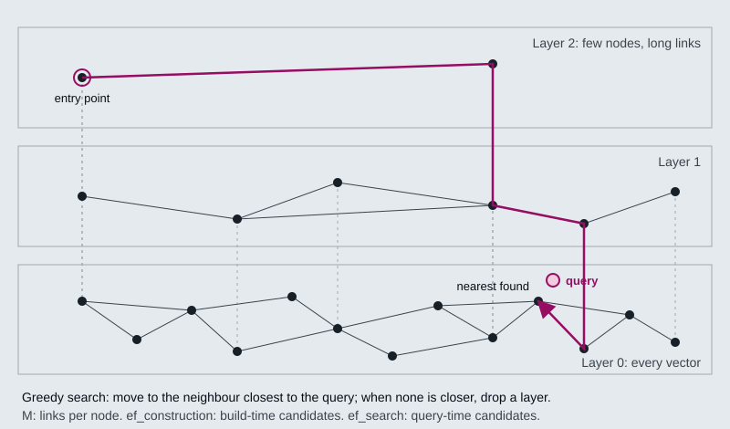

The running example is the Larkspur Cloud handbook kept as a folder of Markdown files: billing.md, refunds.md, outages.md, servers.md and data.md, ten chunks in all, with the same chunk texts as the M11 lab. A sixth file, support.md, arrives later. The event that drives the module is a policy change: the refund window for annual plans drops from 30 days to 14. The golden question is How long do I have to get a full refund on an annual plan?, and after the change the index must return the 14-day rule and nothing else.
TL;DR
- A vector store can add, search, filter and delete. It cannot update text in place: new text means a new vector, so an update is a delete followed by an insert, and both need an ID that stays the same from one run to the next.
- Scores mean different things on different backends. Chroma and FAISS return a distance from
similarity_search_with_score(lower is closer), and Pinecone’s cosine index returns a similarity (higher is closer). A threshold tuned on one is meaningless on another. - Large indexes use ANN structures such as HNSW and IVF, which trade a little recall for a lot of speed. LangChain’s
FAISS.from_documentsbuilds an exactIndexFlatL2; Chroma builds HNSW. - A metadata filter applied before ranking returns up to
kmatches. One applied after ranking can return fewer, or none. LangChain’s FAISS wrapper filters after fetching 20 candidates; PGVector filters in SQL before it ranks. - The Indexing API hashes every chunk and records the hash. In the lab, editing one refund chunk costs one embedding instead of ten, and
cleanup="incremental"deletes the old 30-day chunk. Withcleanup=Noneboth rules stay in the store.
Mental model
- The loader returns the handbook folder as 10 chunks. refunds.md now says 14 days where it said 30.
- Each chunk gets an ID from a hash of its text and its source. Same text, same ID.
- The record manager already holds 9 of the 10 hashes. Those 9 are skipped and never re-embedded.
- One hash is new: the 14-day refund rule. Only that chunk is embedded and added to the collection.
- All 10 keys are stamped with this run’s time, the skipped ones included.
- Incremental cleanup lists keys from refunds.md older than the run. The 30-day chunk is one, so it is deleted.
- A question with a metadata filter searches the collection, and ANN search returns the top k chunks.
The store is the system of record for what retrieval can return, so every change in the source folder has to reach it. The record manager is what makes that cheap: it remembers each chunk’s hash, so a run embeds only the chunks whose text or source changed, and its cleanup step deletes the chunks the folder no longer contains. A stale chunk left in the collection is as retrievable as a current one.
Stable IDs and the missing update
Lesson 15.1: Index operations: create, query, update, delete, persist. Notebooks: 01a_vector_stores_and_index_operations.ipynb, 01b_vector_database_operations.ipynb (optional), 01c_other_vector_stores.ipynb (optional)
Every LangChain vector store implements the same small interface, so the notebook runs one corpus through InMemoryVectorStore, FAISS and Chroma with the same calls:
| Operation | LangChain call | What it does |
|---|---|---|
| Add | add_documents(docs, ids=ids), from_documents(...) |
Embeds the text and stores vector, text and metadata under an ID |
| Read | get(ids=[...]) (Chroma) |
Fetches entries by ID with no similarity search; the first check when retrieval misbehaves |
| Search | similarity_search(query, k=k, filter=...) |
Embeds the query and returns the k nearest entries |
| Delete | delete(ids=[...]) |
Removes entries by ID |
| Update | update_document(document_id=..., document=...) (Chroma) |
Delete, then insert under the same ID |
No store edits a vector in place. Changing a chunk’s text changes its embedding, and the embedding is what the index is built on, so an update has to replace the entry. Chroma’s update_document deletes the old entry and inserts a new one under the same ID, and the notebook shows the entry count unchanged afterwards.
That only works when you know the ID. Re-adding the same text under a new ID stores it twice: on a six-document Chroma store, adding a document again under its existing ID leaves 6 entries, and adding it under a new ID makes 7. The copy then takes a top-k slot that a different chunk needed. Ingestion pipelines that mint a fresh UUID on every run create a duplicate for every chunk on every run.
So derive IDs from the document, never from the run:
f"{source}::{page}::{chunk_index}": readable, and says where the chunk came from.- A hash of the content: re-ingesting unchanged text becomes a no-op. The Indexing API in lesson 15.5 uses this, with the metadata included in the hash.
- A business key (
ticket_id,article_id) when the source has one.
For Larkspur, refunds.md::0 names the refund-window chunk no matter how often the folder is re-read. When the policy changes, the pipeline can delete or overwrite exactly that entry.
What a score means
similarity_search_with_score returns a number per result, and its meaning depends on the backend:
| Backend | Returned by similarity_search_with_score |
Closer means |
|---|---|---|
| Chroma | Distance in the collection’s space; Chroma 1.5.9 defaults to l2 |
Lower |
FAISS (IndexFlatL2) |
Squared L2 distance | Lower |
Pinecone index with metric="cosine" |
Cosine similarity | Higher |
Any store, similarity_search_with_relevance_scores |
A relevance score normalised to 0 to 1 | Higher |
The notebook runs the same query against Chroma and FAISS and gets the same ranking with different numbers. Three rules follow. Never hard-code a threshold without checking what your backend returns, because score > 0.8 can reject everything on a distance scale. Never compare scores across backends or embedding models. Use scores to rank and to compare results of one query, and set any cut-off from known-good and known-bad queries run on the store you ship.
as_retriever() hides the scores. It wraps the store in the Retriever interface (one method, invoke(query)) so chains can swap backends, and it returns documents only. When retrieval looks wrong, go back to the store and read the scores and the result count.
Persisting and reopening
Chroma with a persist_directory writes as it goes. FAISS is explicit: save_local(dir) writes the index and a pickled docstore, and FAISS.load_local(dir, embeddings, allow_dangerous_deserialization=True) reads them back. The flag exists because unpickling can execute code, so load only indexes you built.
Reopening a store fails silently in two ways:
- Wrong collection name.
Chroma(collection_name="typo", persist_directory=...)creates a new, empty collection. Its count is 0, every search returns nothing, and no error is raised. - Wrong embedding model. The store opens and searches return results, but the query vector and the stored vectors come from different models, so the ranking means nothing.
The notebook turns both into startup errors with an open_store() check: refuse an empty collection, and compare the stored vector’s dimension with the live model’s. The dimension check misses a model swap with equal dimensions (text-embedding-3-large truncated to 1,536 against text-embedding-3-small), so also store the model name in the collection’s metadata and assert it.
Check yourself
1. Why does an ingestion pipeline that mints a fresh UUID on every run make retrieval worse over time?
Re-adding the same text under a new ID stores it twice: a six-document Chroma store becomes 7 entries. Each copy takes a top-k slot that a different chunk needed, and every run duplicates every chunk again. Derive IDs from the document instead, such as refunds.md::0, a content hash or a business key.
2. Code written for a Pinecone cosine index keeps results scoring above 0.8. You move it to Chroma with default settings. What goes wrong?
Chroma 1.5.9 returns a distance in l2 space by default, where lower is closer, so score > 0.8 keeps the wrong end and can reject everything. Never compare scores across backends or hard-code a threshold without checking what the backend returns. Set any cut-off from known-good and known-bad queries run on the store you ship.
3. After a restart, every search returns nothing and no error is raised. What is the likely cause, and what check turns it into an error?
A wrong collection name: Chroma(collection_name="typo", ...) creates a new, empty collection. The notebook’s open_store() check refuses an empty collection and compares the stored vector’s dimension with the live model’s. Also store the model name in the collection’s metadata and assert it, because a swap with equal dimensions passes the dimension check.
ANN search
Lesson 15.2: Embedded stores: Chroma and FAISS. Notebooks: 02a_chromadb.ipynb, 02b_faiss.ipynb, 02c_vector_stores_in_practice.ipynb (optional)
Exact nearest-neighbour search compares the query with every stored vector. FAISS.from_documents builds exactly that, an IndexFlatL2: the answer is always the true top k, and the cost grows with every vector you add. At the size of the M15 notebooks (a handful of chunks) exact search is instant, which is why none of them shows a difference between exact and approximate results.
Approximate nearest-neighbour (ANN) indexes give up the guarantee to visit only a small part of the collection. The two families you meet in practice:
- HNSW (hierarchical navigable small world) links each vector to its near neighbours in a graph, and keeps sparser copies of the graph in layers above it. A search enters at the top, walks greedily towards the query, and drops a layer each time no neighbour is closer. Chroma’s local collections are HNSW indexes, and pgvector offers it as an index type.
- IVF (inverted file) clusters the vectors into lists around centroids, then searches only the lists whose centroids are nearest the query. pgvector calls the cluster count
listsand the number searchedprobes; FAISS calls themnlistandnprobe.

Each knob moves recall against speed or memory:
| Knob | What it controls | Chroma 1.5.9 default | pgvector default |
|---|---|---|---|
M (Chroma: max_neighbors) |
Links per node; more links, better recall, more memory | 16 | 16 |
ef_construction |
Candidates kept while building the graph; higher builds slower and better | 100 | 64 |
ef_search |
Candidates kept while answering a query; higher answers slower and better | 100 | 40 |
IVF probes |
Lists searched per query | none (HNSW only) | 1 |
The Chroma values are what collection.configuration_json reports for a new collection in the course environment; the pgvector values are from the pgvector README. Defaults are a starting point. To tune them, measure recall@k of the ANN index against an exact search on your own queries, and raise ef_search until the misses stop mattering for the golden set.
An ANN miss raises no error. An index that skips the refund chunk returns the next-best chunk with a normal-looking score, so a recall drop after the corpus grows shows up as worse answers, not as an error.
Chroma or FAISS
Both run inside your Python process with no server. They differ in what they do beyond the search:
| Chroma | FAISS (LangChain wrapper) | |
|---|---|---|
| Index | HNSW, l2 space by default |
Exact IndexFlatL2 from from_documents; FAISS itself also has HNSW and IVF indexes |
| Persistence | Writes to persist_directory as it goes |
save_local / load_local, metadata in a pickle |
| Metadata filter | Runs inside the store, before ranking; returns every match up to k |
Runs in Python on fetch_k=20 candidates after ranking |
| Filter syntax | One key per dict; combine with $and / $or. {"dept": "HR", "year": 2026} raises ValueError |
A dict of values or operators ($eq, $gt, $in, …), or a callable on the metadata |
| Read by ID | get(ids=...) |
Through the docstore only |
| Good for | Local development and small production indexes you update | Static, read-heavy corpora where search speed matters |
The filter difference shows up as missing results. In a check run for this page, a FAISS store held 25 chunks tagged t="no" that sat close to the query and 3 tagged t="yes" further away. similarity_search(q, k=3, filter={"t": "yes"}) returned 0 results, because none of the 3 was among the 20 nearest candidates; with fetch_k=28 it returned all 3. Chroma, asked for k=5 with a filter only 2 entries match, returned those 2.
The notebooks’ guidance: start with Chroma for anything you might keep, choose FAISS for a static corpus you search often, and move to a hosted store (lesson 15.3) when you need concurrent writers or more than one machine.
Check yourself
1. Why can an approximate nearest-neighbour index miss the right chunk without anyone noticing?
An ANN index visits only a small part of the collection and gives up the guarantee of the true top k. A miss raises no error: the index returns the next-best chunk with a normal-looking score, so a recall drop shows up as worse answers. Measure recall@k against an exact search on your own queries, and raise ef_search until the misses stop mattering for the golden set.
2. A FAISS store holds 25 chunks tagged no near the query and 3 tagged yes further away. A search filtered to yes with k of 3 returns nothing. Why?
The FAISS wrapper filters in Python after ranking, on the fetch_k=20 nearest candidates, and none of the 3 matching chunks was among them. With fetch_k=28 it returns all 3. Chroma filters inside the store before ranking, so it returns every match up to k.
3. Your index needs several writers at once across more than one machine. Is Chroma or FAISS the right choice?
Neither. Both run inside your Python process with no server, so the notebooks’ guidance is to move to a hosted store (lesson 15.3) when you need concurrent writers or more than one machine. On one machine, choose Chroma for anything you might keep and update, and FAISS for a static corpus you search often.
Collections and namespaces
Lesson 15.3: Managed stores: Astra DB and Pinecone. Notebooks: 03b_pinecone.ipynb, 03a_astra_db.ipynb (optional)
Every store groups its entries, and the grouping decides what one query can see. The names differ:
| Store | Container you create | Partition inside it | What is fixed when you create it |
|---|---|---|---|
| Chroma | Collection (collection_name) |
none | Distance space and HNSW settings |
| PGVector | A row in langchain_pg_collection (collection_name) |
none; entries in langchain_pg_embedding carry its collection_id |
Nothing, unless you pass embedding_length, which fixes the vector column’s dimension |
| Pinecone | Index (pc.create_index(name, dimension, metric, spec)) |
Namespace | Dimension and metric |
| Astra DB | Collection (collection_name) inside a namespace, also called a keyspace |
none | Vector dimension and metric |
flowchart TD
P["Pinecone project"] --> I["Index: rag<br/>dimension 1024, cosine"]
I --> N1["Namespace: handbook"]
I --> N2["Namespace: tenant-acme"]
N1 --> R1["Records<br/>id + vector + metadata"]
N2 --> R2["Records<br/>id + vector + metadata"]
The Pinecone notebook creates a serverless index named rag with dimension=1024 and metric="cosine", and asks OpenAI’s text-embedding-3-small for 1,024 dimensions to match. The index’s dimension cannot change, so the embedding model and its output size are part of the index’s identity. The Astra DB notebook does the same with dimensions=1024 and passes namespace=None, so the store falls back to the ASTRA_DB_KEYSPACE environment variable or the database’s default namespace.
Pinecone’s indexing overview says reads and writes “always target one namespace”, that namespaces are created on first upsert, and that you can isolate customers with “one namespace per customer”. A query in one namespace cannot return another namespace’s records, which is a stronger boundary than a metadata filter that a caller can leave out. In LangChain, PineconeVectorStore takes the namespace as an argument.
The record manager in lesson 15.5 has a namespace too: SQLRecordManager("pgvector/vectordb", db_url=...). It scopes the record manager’s keys, not the vectors. Keep one record-manager namespace per collection. If two collections share one, a full cleanup run on either deletes the other’s keys.
For Larkspur, the public handbook goes in one collection or namespace. Customer-specific runbooks, if they arrive, go in their own namespaces, so re-indexing the handbook never touches customer data and a customer’s query cannot reach another customer’s text.
When a managed store earns its cost
The managed stores take the same LangChain calls as Chroma: add_documents, similarity_search(query, k, filter=...), as_retriever(...). The Pinecone notebook filters with {"source": "tweet"} and runs a retriever with search_type="similarity_score_threshold" and score_threshold=0.4, a threshold that only means something on that index’s cosine scale. Switching stores changes the setup and the bill; the calls stay the same.
Lesson 15.1’s notebook gives the rule: move to a hosted store when you need concurrent writers, horizontal scale or managed availability, and not before. The move is a re-index, so the embedding model goes with you, and the IDs you derived in lesson 15.1 make the second load as idempotent as the first. Until then an embedded store, or pgvector in a Postgres you already run (lesson 15.4), has no API key to manage, no network hop and no bill per query.
Check yourself
1. Why is one Pinecone namespace per customer a stronger boundary than a metadata filter on the customer id?
Pinecone reads and writes always target one namespace, so a query in one namespace cannot return another namespace’s records. A metadata filter is something a caller can leave out. For Larkspur, this also means re-indexing the handbook never touches customer data.
2. The Pinecone notebook asks text-embedding-3-small for 1,024 dimensions. Why, and what happens if you later want 1,536?
The index was created with dimension=1024 and metric="cosine", and the embedding output must match it. An index’s dimension cannot change, so the embedding model and its output size are part of the index’s identity. Moving to 1,536 means a new index and a re-index into it.
3. Your Larkspur index runs fine on Chroma with one writer. When should you move it to a managed store?
When you need concurrent writers, horizontal scale or managed availability, and not before. Until then an embedded store, or pgvector in a Postgres you already run, has no API key to manage, no network hop and no bill per query. The move is a re-index, and the stable IDs from lesson 15.1 keep the second load idempotent.
Metadata filters
Lesson 15.4: Postgres + pgvector with metadata-filtered search. Notebooks: 04a_filtered_search_pgvector.ipynb
A metadata filter restricts a similarity search to entries whose metadata matches a predicate. It is how one index serves many scopes: one customer, one product, one section of the handbook, documents newer than a date. The notebook indexes two restaurants’ FAQs and reviews into one PGVector collection and narrows each query with a filter on restaurant, category or cuisine.
LangChain’s PGVector (from langchain_postgres) keeps everything in two tables. langchain_pg_collection has one row per collection. langchain_pg_embedding has one row per chunk: the embedding vector, the document text, a collection_id, and the metadata as a JSONB column, cmetadata, with a GIN index on it. A filter becomes a WHERE clause on cmetadata.
| Filter | Meaning |
|---|---|
{"source": "refunds.md"} |
Equality on one key |
{"source": "refunds.md", "category": "policy"} |
Two keys: PGVector treats it as AND |
{"source": {"$in": ["refunds.md", "billing.md"]}} |
Operator form |
{"$and": [{...}, {...}]}, {"$or": [...]} |
Explicit logic; the portable form |
PGVector accepts $eq, $ne, $lt, $lte, $gt, $gte, $in, $nin, $between, $exists, $like, $ilike, $and, $or and $not. Stores share most of this syntax but differ at the edges. The two-key dict that PGVector reads as AND makes Chroma raise ValueError: Expected where to have exactly one operator, so write $and when code may move between stores.
Filters are exact. "Engineering" does not match "engineering", and a field that was never written matches nothing. Normalise metadata at ingestion (M12) so the filter has something consistent to match.
A filter is not access control. Lesson 15.1’s notebook makes the point: a caller who omits the filter sees everything. For tenant isolation, enforce the filter in the service that builds the query, or use a namespace or a separate collection per tenant (lesson 15.3).
Filtering before or after the search
There are two ways to combine a filter with a top-k search, and they return different results:
flowchart LR
Q[Question + filter] --> PRE["Pre-filter<br/>keep matching rows"]
PRE --> PK["Rank them<br/>return up to k"]
Q --> POST["Post-filter<br/>rank fetch_k nearest"]
POST --> PD["Drop non-matches<br/>can return fewer than k"]
Pre-filtering restricts the candidates, then ranks them. If at least k entries match, you get k. LangChain’s PGVector builds one SQL query, WHERE collection_id = … AND <filter> then ORDER BY distance, and it creates no vector index of its own, so Postgres compares the query with every matching row: an exact, pre-filtered search.
Post-filtering ranks first, then drops what fails the filter. LangChain’s FAISS wrapper does this on fetch_k=20 candidates (lesson 15.2), so a selective filter can return fewer than k results or none.
Adding an ANN index to pgvector moves it towards post-filtering. The pgvector README says: “With approximate indexes, filtering is applied after the index is scanned.” Its example: if a condition matches 10% of rows, an HNSW scan with the default hnsw.ef_search of 40 leaves “only 4 rows” on average. From version 0.8.0, iterative index scans (SET hnsw.iterative_scan = strict_order or relaxed_order) keep scanning until enough rows pass the filter.
The symptom of post-filtering is a query that asks for k = 5 and gets 2. Log len(results) beside k on every filtered query; raising k hides the problem without fixing it.
Check yourself
1. Why is a metadata filter on the tenant not enough for access control?
A caller who omits the filter sees everything. Enforce the filter in the service that builds the query, or give each tenant its own namespace or collection (lesson 15.3).
2. A filter dict with source and category as two keys works on PGVector. What happens when the same code moves to Chroma, and how should it be written?
PGVector reads the two keys as AND, but Chroma raises ValueError: Expected where to have exactly one operator. Write {"$and": [{...}, {...}]}, the portable form, whenever code may move between stores.
3. You add an HNSW index to pgvector, and a filtered query asking for 5 results now returns 2. What happened, and what do you change?
With an approximate index, pgvector applies the filter after scanning the index, so it behaves like post-filtering: a condition matching 10% of rows leaves about 4 rows at the default hnsw.ef_search of 40. From version 0.8.0, iterative index scans keep scanning until enough rows pass the filter. Log len(results) beside k on every filtered query, because raising k hides the problem without fixing it.
Idempotent re-indexing
Lesson 15.5: Incremental indexing: Indexing API and record manager. Notebooks: 05a_indexing_api.ipynb
A sync job is idempotent when running it twice on the same folder leaves the store as one run did and embeds nothing the second time. LangChain’s Indexing API gives you that with three parts: the vector store, a record manager that remembers what has been written, and the index() function that compares the two on every run.
from langchain_classic.indexes import SQLRecordManager, index
record_manager = SQLRecordManager("pgvector/vectordb", db_url=CONNECTION_STRING)
record_manager.create_schema()
index(docs, record_manager, vectorstore, cleanup="incremental", source_id_key="source")
Every chunk’s ID is a hash. index() hashes the chunk’s text, hashes its metadata serialised as sorted JSON, then hashes the two together. With the default key_encoder="sha1" the result is written as a UUID, and LangChain warns that SHA-1 is not collision-resistant; pass key_encoder="sha256", "sha512" or "blake2b" in new code. The record manager stores one row per hash: the key, a group ID (the value of source_id_key, here the file name) and the time it was last seen.
A run goes like this, in batches of batch_size=100:
sequenceDiagram
participant I as index()
participant R as Record manager
participant V as Vector store
I->>R: get_time(), the run's start
I->>R: exists(10 hashes)?
R-->>I: 9 known, 1 new
I->>V: add_documents(1 chunk, ids=hash)
I->>R: update(10 keys, group=source)
I->>R: list_keys(refunds.md, before start)
R-->>I: the 30-day chunk's key
I->>V: delete(that key)
I->>R: delete_keys(that key)
Known hashes are skipped and only have their timestamp refreshed. New hashes are embedded and written under the hash as their ID, so writing the same chunk twice overwrites instead of duplicating. Then every key in the batch is stamped with a time no earlier than the run’s start. Cleanup deletes keys whose stamp is older than the run’s start: the chunks this run never saw.
An edited chunk is a new hash. The lab’s refund edit comes back as {'num_added': 1, 'num_updated': 0, 'num_skipped': 9, 'num_deleted': 1}. In langchain-core 1.7.0, num_updated counts only chunks re-written because of force_update=True, which re-embeds chunks whose hash is already known; the notebook’s comments describe changed content as “updated”, but changed text shows up as one add and one delete.
The hash covers text and metadata and nothing else. Add a metadata field to every chunk or change the splitter, and every hash changes, so the next run re-embeds the whole corpus. Change the embedding model, and no hash changes, so the next run skips everything and leaves the old vectors in place. For a model change, build a new collection with its own record-manager namespace, or run once with force_update=True.
The notebook’s own sequence, replayed for this page with in-memory stores in place of Postgres, returns the numbers its comments expect. Seven chunks of bella_vista.txt go in under cleanup=None. After one chunk is edited, one removed and one added, the second None run adds 2, skips 5, deletes 0 and leaves 9 entries in the store: the old version and the removed chunk are both still there. The third run, under incremental, adds 2 and deletes 6. An empty batch under incremental changes nothing; under full it deletes all 5 remaining entries.
Choosing a cleanup mode
cleanup decides which keys a run may delete. incremental and scoped_full need source_id_key, because they delete by source.
| Mode | Deletes | When it runs |
|---|---|---|
None |
Nothing | |
"incremental" |
Keys from sources that sent chunks in this batch, not seen in this run | After each batch |
"scoped_full" |
Keys from sources seen anywhere in this run, not seen in this run | Once, at the end |
"full" |
Every key not seen in this run, whatever its source | Once, at the end |
The interactive lab runs a JavaScript port of index() over the Larkspur folder. Across 26,920 sequences of 1 to 6 runs (100,761 index() calls, every folder state and mode, batch sizes 100 and 3), its counts, stored IDs and record-manager keys match langchain_core 1.7.0 in every call. Starting from a store loaded with all 10 chunks, one more run gives:
| Change, then one run | None |
incremental |
scoped_full |
full |
|---|---|---|---|---|
refunds.md edited, 30 days to 14 |
1 added, 0 deleted; the 30-day chunk stays | 1 added, 1 deleted | 1 added, 1 deleted | 1 added, 1 deleted |
outages.md deleted |
0 deleted; its 2 chunks stay | 0 deleted; its 2 chunks stay | 0 deleted; its 2 chunks stay | 2 deleted |
support.md added |
1 added | 1 added | 1 added | 1 added |
Loader returns only refunds.md |
2 skipped, 0 deleted | 2 skipped, 0 deleted | 2 skipped, 0 deleted | 8 deleted |
| Loader returns nothing | nothing | nothing | nothing | all 10 deleted |
Nonelets stale chunks pile up. After the refund edit the store holds 11 chunks, and the golden question can retrieve the 30-day rule and the 14-day rule side by side. Switchrefunds.mdback to 30 days and run again: 0 added, because the 30-day hash was never removed, and now the 14-day chunk is the stale one.incrementalhandles edits and cannot see deleted files. It cleans a source only when that source sends at least one chunk. A file removed from the folder sends none, so its chunks stay until afullrun or an explicitdelete()by ID.fulltreats “not returned” as “deleted”. It is the only mode that removes a deleted file, and the only one that wipes the store when the loader returns a partial folder or nothing at all. Run it only over the whole corpus, and refuse to run it when the loader returns far fewer files than last time.scoped_fullmatchesincrementalat this size. The difference appears when one source’s chunks span several batches:incrementalcleans after each batch and does redundant work, whilescoped_fullcollects the sources it saw and cleans once at the end.
For Larkspur’s nightly sync, incremental keyed on source handles policy edits and new files, and a weekly full run over the complete folder, guarded by a file-count check, removes files the team deleted. SQLRecordManager keeps the keys in the same Postgres as the vectors and reads the time from the database, so every writer stamps keys on one clock; an update raises a time-sync error if that clock reads earlier than the run’s start.
Check yourself
1. You switch to a new embedding model and rerun the sync job. Why does it embed nothing, and how do you rebuild?
Each chunk’s ID is a hash of its text and metadata only, so a model change leaves every hash the same. The run skips every chunk and leaves the old model’s vectors in place. Build a new collection with its own record-manager namespace, or run once with force_update=True.
2. The outages file is deleted from the Larkspur folder and the nightly sync runs with incremental cleanup. How many of its chunks are removed?
None. incremental cleans a source only when that source sends at least one chunk in the batch, and a deleted file sends none. Its 2 chunks stay until a full run or an explicit delete() by ID.
3. A loader bug returns only the refunds file, and the job runs with full cleanup. What happens, and how do you guard against it?
full treats every key not seen in the run as deleted, so the 8 chunks from the other files are deleted. Run full only over the whole corpus, and refuse to run it when the loader returns far fewer files than last time. Larkspur’s plan is a nightly incremental sync plus a weekly full run guarded by a file-count check.
Interactive lab
The record manager and cleanup modes: open the file in a browser. Run index() once to embed all 10 chunks. Set refunds.md to 14 days and run with cleanup None: 1 chunk is added, none is deleted, and the store now holds the 30-day rule and the 14-day rule side by side. Switch to incremental and run again to delete the stale one. Then mark outages.md Deleted and run under incremental (nothing is deleted) and under full (its 2 chunks go).
How it connects
- Before: M12 sets the
sourcemetadata the record manager groups by and the flat metadata types the stores accept; M13 decides what a chunk is, and so what gets hashed; M14 picks the embedding model, which has to match the index for as long as the index lives. - Next: M16 indexes more than one representation per document (parent documents, summaries), which needs the stable IDs from lesson 15.1; M17 builds retrieval strategies (MMR, thresholds, hybrid search) on top of
as_retriever().
Interview Spotlight: 5 Questions You Might Get Asked
Production questions in the style of OpenAI, Anthropic and Google interviews for applied AI roles.
1. Larkspur cut the annual refund window from 30 days to 14 and the nightly sync ran. A week later the assistant still tells some customers “30 days”. The new chunk is in the index. What happened, and how do you fix it?
What a strong answer covers:
- Checks the store directly:
get()or a search filtered onsource="refunds.md"shows both refund chunks, so retrieval picks either one - Finds the cause in the sync:
cleanup=None(it never deletes), or random UUIDs per run, so the old chunk has no ID the pipeline can name - Fixes it with
cleanup="incremental"keyed onsource, plus one run to clear the backlog, and checks that the store count equals the folder’s chunk count - Adds the golden question with a negative check: the answer must not contain “30 days”
2. Larkspur wants one assistant to answer from each enterprise customer’s private runbooks as well as the public handbook. How do you lay out the vector store, and which store do you pick?
What a strong answer covers:
- Isolation per customer: a namespace per tenant in Pinecone (queries target one namespace), or a tenant key filtered on every query in pgvector, with the filter enforced server-side rather than trusted from the caller
- Picks pgvector when Postgres already holds the customer data (one backup, SQL joins, JSONB metadata) and a managed store when write concurrency or scale outgrows one database
- Keeps the public handbook in its own collection or namespace and merges results, so a handbook re-index never touches tenant data
- Notes that moving between stores is a re-index with the same embedding model, so the choice can wait until load says it must
3. The sync job runs every night. What do you monitor so that you hear about a bad run before a customer does?
What a strong answer covers:
- Logs
index()’s four counts per run and alerts on outliers:num_addednear the full chunk count means every hash changed (a splitter or metadata change), and a largenum_deletedunderfullmeans the loader returned a partial folder - Compares three numbers after each run: chunks the loader produced, record-manager keys, vectors in the store
- Guards
fullcleanup: refuse to run it when the loader returns fewer files than the previous run, because an empty batch deletes everything - Re-runs the golden set after any run that added or deleted chunks
4. A small customer’s queries come back with zero results even though their documents are indexed. Larger customers are fine. What do you suspect?
What a strong answer covers:
- A filter applied after ranking: LangChain’s FAISS wrapper ranks
fetch_k=20candidates and then filters, so a tenant whose chunks are not in the global top 20 gets nothing - The same effect inside pgvector once an HNSW index exists: filtering runs after the index scan, and the pgvector README’s example is 4 matching rows out of 40 candidates when the filter matches 10% of rows
- Fixes: pre-filtering in the store, a larger
fetch_korhnsw.ef_search, iterative index scans (pgvector 0.8.0 and later), or one partition or namespace per tenant - Logs
len(results)againstkon every query, since this failure produces no error
5. You switch the embedding model from text-embedding-ada-002 to text-embedding-3-small and re-run the Indexing API over the same folder. What happens, and what should you have done?
What a strong answer covers:
- Nothing is re-embedded: the hash covers text and metadata only, so every chunk is skipped and the store keeps the old vectors
- Both models return 1,536 dimensions, so nothing raises an error; queries embedded with the new model are compared with vectors from the old one and the ranking is noise
- Builds a new collection with its own record-manager namespace, back-fills it, runs the golden set, then switches traffic, or re-embeds in place with
force_update=True - Stores the model name with the collection and asserts it at startup, because a dimension check alone does not catch this
Key Takeaways
- Give every chunk an ID derived from the document: its source and position, or a hash of its content. Without one you cannot update, delete or de-duplicate.
- Read what a score means on your backend before you set a threshold, and log how many results a filtered search returned.
- Filter before the search when the filter is selective; after-search filtering silently returns fewer than
k. - Sync with the Indexing API and
cleanup="incremental"keyed onsource. Usefullonly when the loader returns the whole corpus, and never on a batch that might be empty.